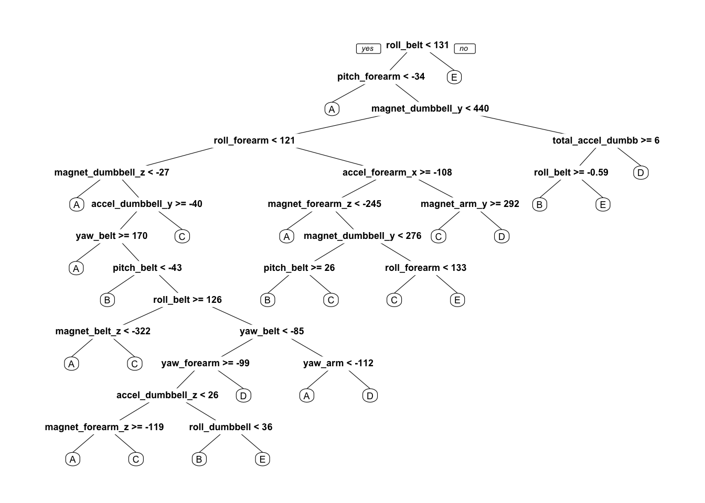

Load necessary libraries
Using devices such as Jawbone Up, Nike FuelBand, and Fitbit it is now possible to collect a large amount of data about personal activity relatively inexpensively. These type of devices are part of the quantified self movement – a group of enthusiasts who take measurements about themselves regularly to improve their health, to find patterns in their behavior, or because they are tech geeks. One thing that people regularly do is quantify how much of a particular activity they do, but they rarely quantify how well they do it.
In this project, we will use data from accelerometers on the belt, forearm, arm, and dumbell of 6 participants to predict the manner in which they did the exercise.
Load data
raw_training <- read.csv("./pml-training.csv")
raw_test <- read.csv("./pml-testing.csv")
dim(raw_training)## [1] 19622 160How many complete cases do we have?
sum(complete.cases(raw_training))## [1] 406raw_training <- raw_training[, colSums(is.na(raw_training)) == 0]
raw_test <- raw_test[, colSums(is.na(raw_test)) == 0]
classe <- raw_training$classe
training_cols_remove <- grepl("^X|timestamp|window", names(raw_training))
raw_training <- raw_training[, !training_cols_remove]
clean_training <- raw_training[, sapply(raw_training, is.numeric)]
clean_training$classe <- classe
test_cols_remove <- grepl("^X|timestamp|window", names(raw_test))
raw_test <- raw_test[, !test_cols_remove]
clean_test <- raw_test[, sapply(raw_test, is.numeric)]set.seed(1)
inTrain <- createDataPartition(clean_training$classe, p=0.70, list=F)
training_data <- clean_training[inTrain, ]
testing_data <- clean_training[-inTrain, ]control <- trainControl(method="cv", 5)
forest <- train(classe ~ ., data=training_data, method="rf", trControl=control, ntree=100)
forest## Random Forest
##
## 13737 samples
## 52 predictor
## 5 classes: 'A', 'B', 'C', 'D', 'E'
##
## No pre-processing
## Resampling: Cross-Validated (5 fold)
## Summary of sample sizes: 10988, 10988, 10991, 10991, 10990
## Resampling results across tuning parameters:
##
## mtry Accuracy Kappa
## 2 0.9893715 0.9865539
## 27 0.9903907 0.9878444
## 52 0.9820931 0.9773461
##
## Accuracy was used to select the optimal model using the largest value.
## The final value used for the model was mtry = 27.predictions <- predict(forest, testing_data)
testing_data$classe <- as.factor(testing_data$classe)
confusionMatrix(testing_data$classe, predictions)## Confusion Matrix and Statistics
##
## Reference
## Prediction A B C D E
## A 1670 3 1 0 0
## B 3 1135 1 0 0
## C 0 12 1007 7 0
## D 0 0 12 951 1
## E 0 0 1 2 1079
##
## Overall Statistics
##
## Accuracy : 0.9927
## 95% CI : (0.9902, 0.9947)
## No Information Rate : 0.2843
## P-Value [Acc > NIR] : < 2.2e-16
##
## Kappa : 0.9908
##
## Mcnemar's Test P-Value : NA
##
## Statistics by Class:
##
## Class: A Class: B Class: C Class: D Class: E
## Sensitivity 0.9982 0.9870 0.9853 0.9906 0.9991
## Specificity 0.9991 0.9992 0.9961 0.9974 0.9994
## Pos Pred Value 0.9976 0.9965 0.9815 0.9865 0.9972
## Neg Pred Value 0.9993 0.9968 0.9969 0.9982 0.9998
## Prevalence 0.2843 0.1954 0.1737 0.1631 0.1835
## Detection Rate 0.2838 0.1929 0.1711 0.1616 0.1833
## Detection Prevalence 0.2845 0.1935 0.1743 0.1638 0.1839
## Balanced Accuracy 0.9986 0.9931 0.9907 0.9940 0.9992accuracy <- postResample(predictions, testing_data$classe)
accuracy## Accuracy Kappa
## 0.9926933 0.9907577oose <- 1 - as.numeric(confusionMatrix(testing_data$classe, predictions)$overall[1])
oose## [1] 0.007306712results <- predict(forest, clean_test[, -length(names(clean_test))])
results## [1] B A B A A E D B A A B C B A E E A B B B
## Levels: A B C D Emodel <- rpart(classe ~ ., data=training_data, method="class")
prp(model) 